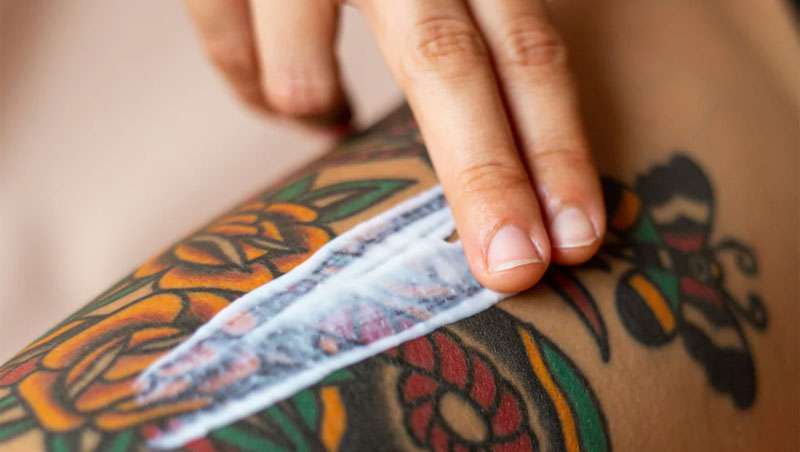
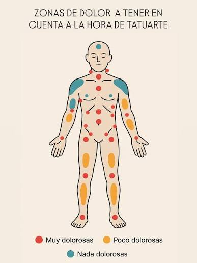

Mantén el vendaje puesto el tiempo que indique tu tatuador. Lava el tatuaje dos veces al día con agua
tibia y jabón neutro, sin frotar, y sécalo a toques con papel. Aplica una capa fina de crema
recomendada después de cada lavado para hidratar.
No rasques aunque pique, y no arranques las costras ni la piel que se descame. Evita mojarlo en
piscinas, mar, bañeras o saunas durante al menos un mes. Usa ropa holgada de algodón que no roce la
zona. Protégelo del sol con FPS 50+ una vez que esté completamente cicatrizado.
La proteccion solar es para siempre
Una vez que el tatuaje esté completamente curado (aproximadamente en un mes), adquiere el hábito de
protegerlo del sol siempre que lo expongas. Usa un protector solar de alto factor de protección (FPS
50+) para mantener los colores vibrantes y evitar el envejecimiento prematuro de la tinta y la piel.

¿Duele hacerse un tatuaje? Lo que debes saber antes de tu primera sesión
La sensación varía según la zona del cuerpo, el tamaño del diseño y tu propio umbral del dolor. Las áreas con
más terminaciones nerviosas o piel fina, como costillas, muñecas, tobillos o cuello, suelen ser más sensibles,
mientras que brazos, muslos y espalda alta tienden a tolerarse mejor.
Durante la sesión sentirás una mezcla de vibración, calor y un pinchazo constante. Para hacerla más llevadera,
descansa bien la noche anterior, come algo ligero antes de venir, mantente hidratado y evita alcohol o cafeína
en exceso. Recuerda que puedes pedir pausas cuando lo necesites: tu comodidad también es parte del proceso.

Cómo elegir tu primer tatuaje: ideas, tamaño y ubicación
Antes de decidirte, piensa en el significado que quieres darle, pero también en cómo envejecerá con el tiempo.
Los diseños con líneas finas y detalles muy pequeños tienden a perder definición, mientras que las piezas con
buen contraste y tamaños medianos se mantienen mejor a largo plazo.
La ubicación también importa: considera la visibilidad que tendrá en tu vida diaria, laboral o social, y cómo
se adapta a la forma de tu cuerpo. En Akali Tattoo trabajamos contigo en el diseño, el tamaño y la colocación
para que el resultado sea armonioso y puedas lucirlo con orgullo durante años.